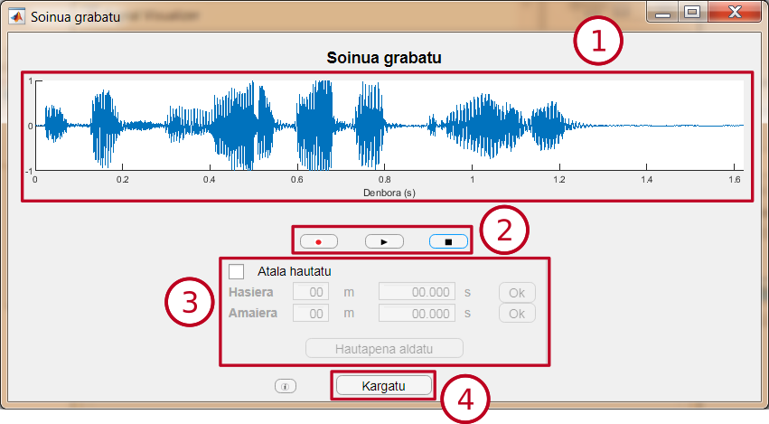

Soinua grabatu
Modulu honek 60 segundora arteko audioa grabatzea ahalbidetzen du, gero analizatzeko.
Interfazea

-
Aurrebista leihoa: Moduluak sortuko duen seinalea ikusteko aukera ematen du.
-
Erreprodukzio-botoiak: Grabazioa hastea, erreprodukzioa hastea edo audio-fitxategiaren grabazioa edo erreprodukzioa geldiaraztea ahalbidetzen dute. Zati bat aukeratuta badago, zati hori bakarrik erreproduzituko da.
-
Atalak hautatzeko panela: Kargatutako audioaren atal bat hautatzeko aukera ematen du. Hasiera eta amaiera hautatzeko, mutur bakoitza jarriko den denbora gaitutako kutxetan idatzi beharko da, edo, bestela, aurrebista leihoan klik egin beharko da.
-
"Kargatu" botoia: Bistaratzeko beste leiho bat irekitzen du, eta, bertan, soinu-fitxategia kargatzen du, edo, bestela, hautatutako zatia.